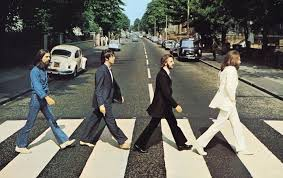
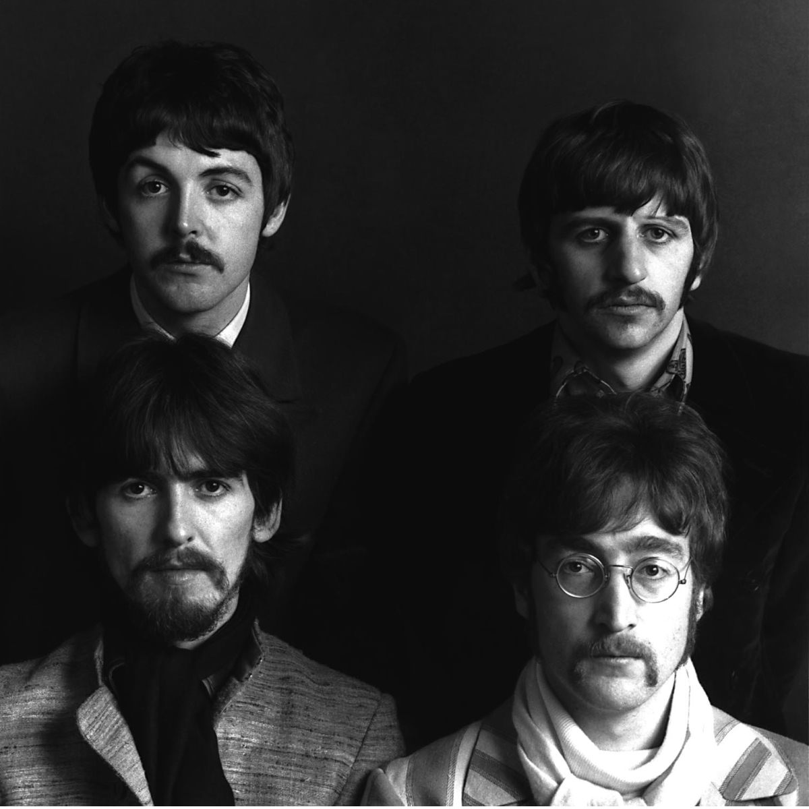

Banda de Rock formada em Liverpool

A história começa em 1957, em Liverpool, quando John Lennon, então com 16 anos, formou a banda de skiffle (mistura de rock, blues e folk) chamada The Quarrymen. No mesmo ano, John convidou Paul McCartney para se juntar ao grupo. Pouco depois, em 1958, o guitarrista George Harrison foi aceito na banda, após impressionar John com sua habilidade. Em 1960, Stuart Sutcliffe, amigo de Lennon, juntou-se ao grupo como baixista e sugeriu o nome "Beatles".
"Um sonho que você sonha sozinho é apenas um sonho. Um sonho que você sonha em conjunto é realidade"
John Lennon
Let me take you down
'Cause I'm going to Strawberry Fields
Nothing is real
And nothing to get hung about
Strawberry Fields forever
The Beatles - Strawberry Fields Forever

Saiba mais sobre os Beatles Clicando Aqui